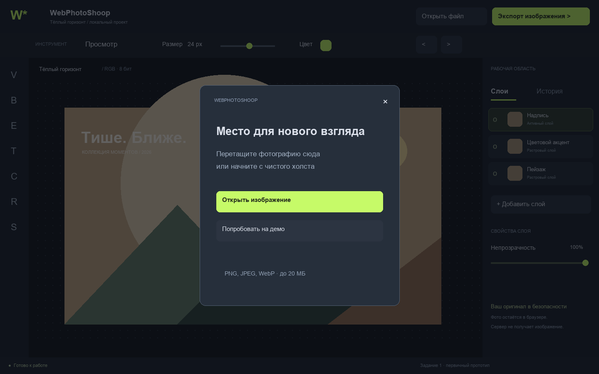
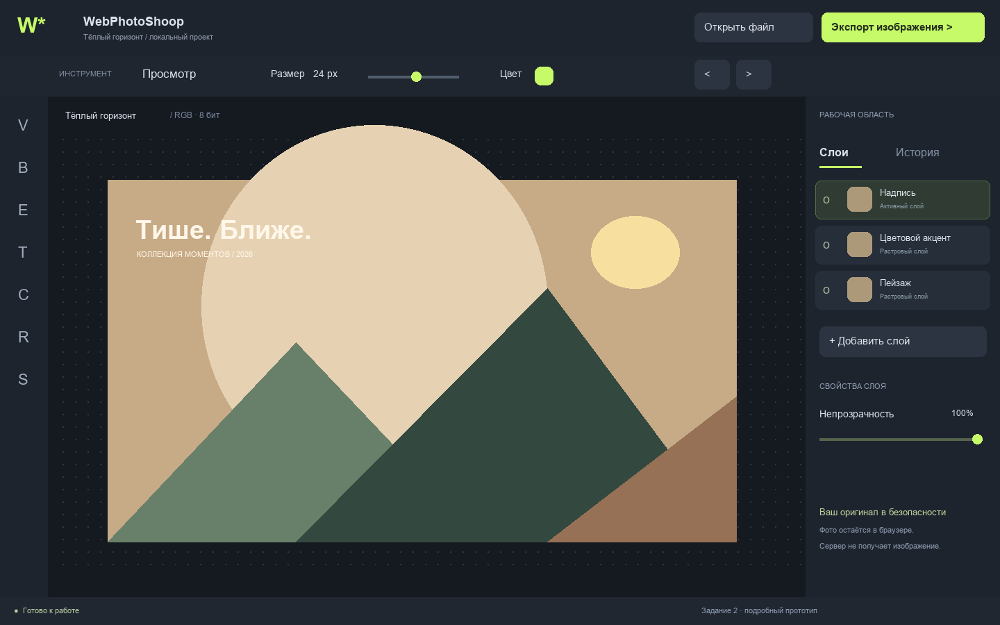
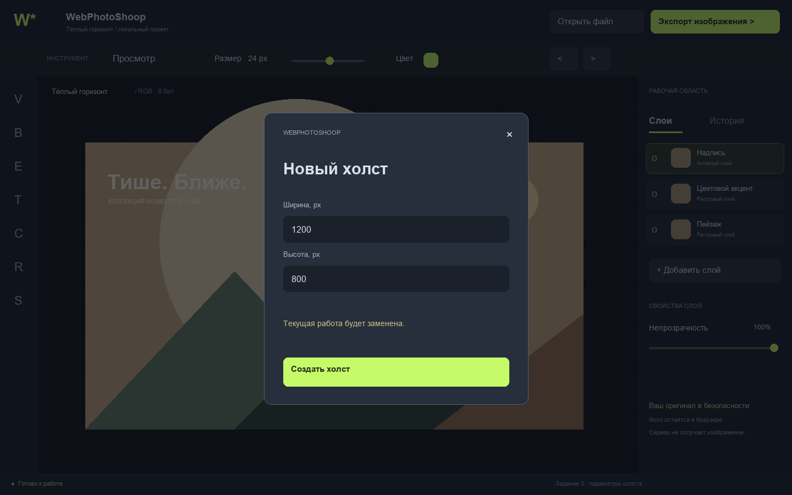
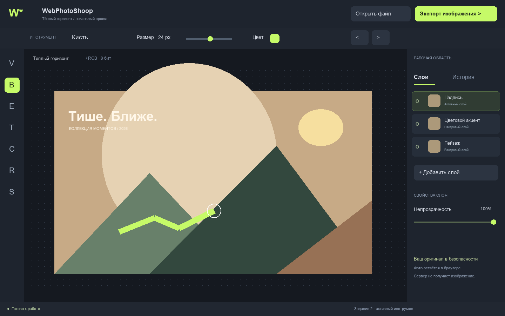
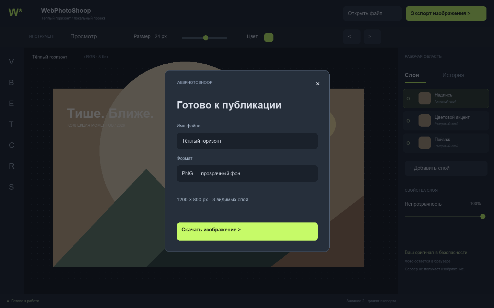
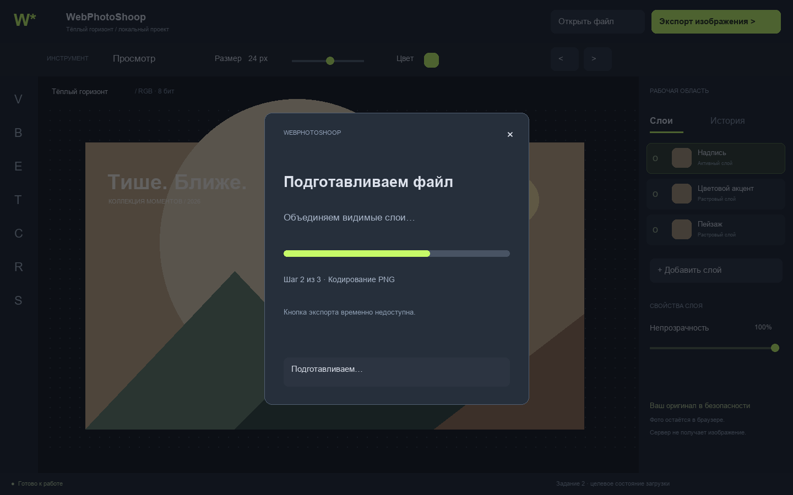
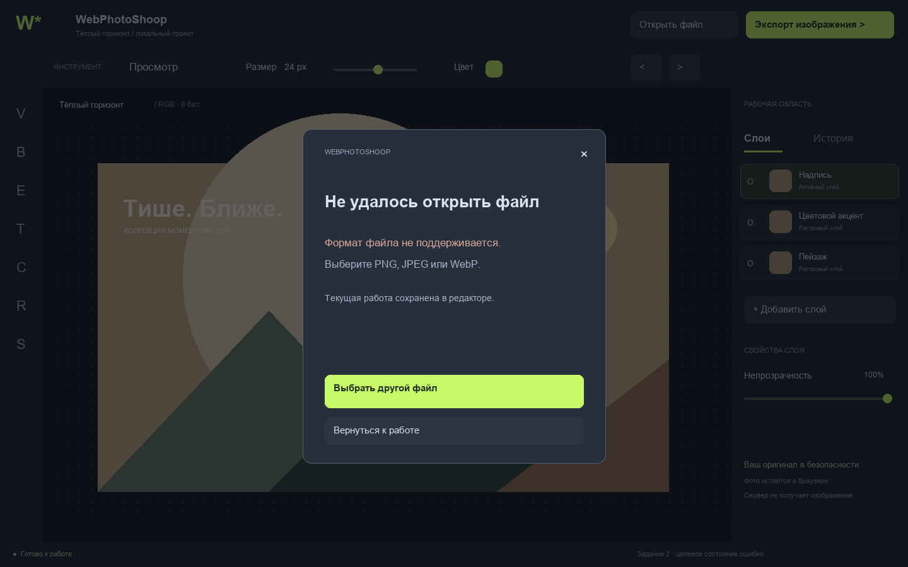
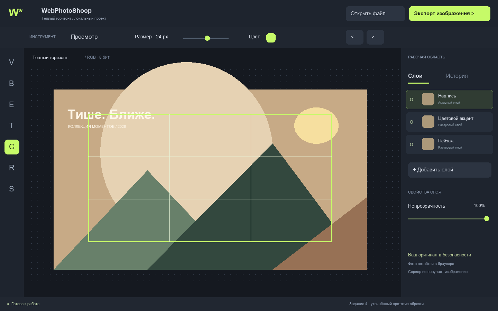
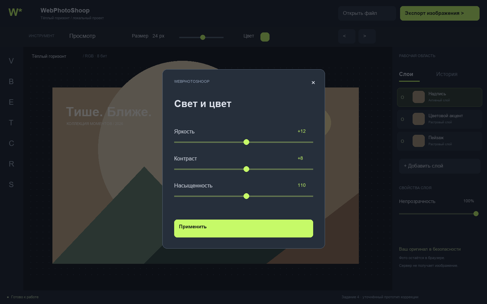

Задание 1 · первичный прототип

Макеты целевого интерфейса для заданий 1, 2 и 4. Это проектные изображения, а не снимки проверенного приложения. Точная полоса прогресса и отдельный диалог ошибки показаны как целевое развитие; в версии 0.1 используются индикатор ожидания и строка состояния.








